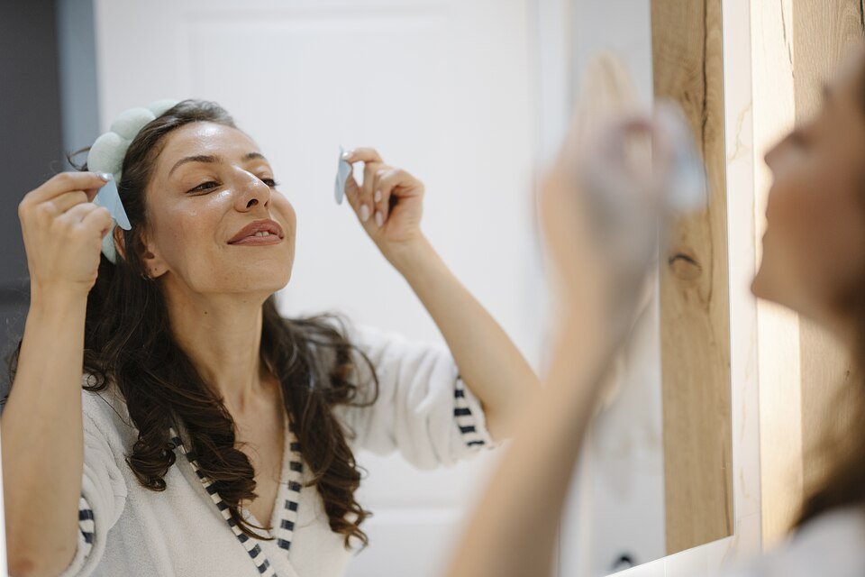
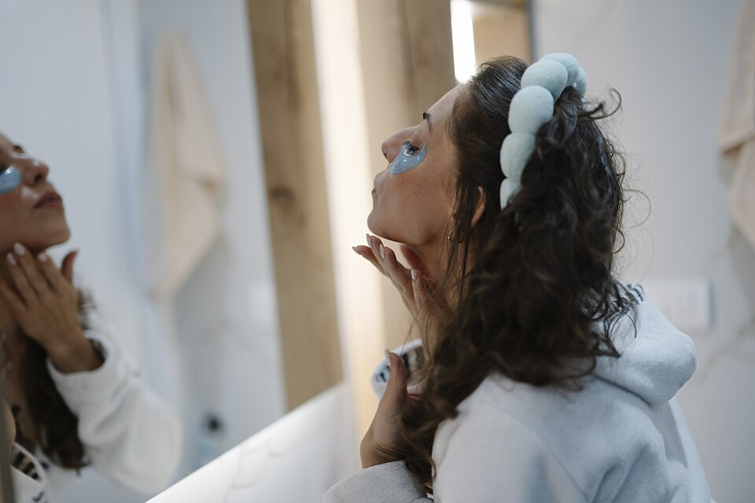

Blog Dermatológico
Información educativa sobre salud de la piel
Acné: Causas, Tipos y Tratamientos
El acné es una de las condiciones dermatológicas más comunes. Descubre sus causas, diferentes tipos y opciones de tratamiento efectivas desde el punto de vista científico.
Leer más →
Psoriasis: Todo lo Que Necesitas Saber
La psoriasis es una enfermedad autoinmune crónica que afecta la piel. Conoce los síntomas, desencadenantes y opciones terapéuticas disponibles.
Leer más →

Dermatitis Atópica: Cuidados e Hidratación
La dermatitis atópica requiere un régimen especial de cuidados. Aprende estrategias de hidratación y manejo diario para reducir síntomas.
Leer más →

Vitiligo: Información y Opciones de Tratamiento
El vitiligo es un trastorno que causa pérdida de pigmentación. Descubre las causas y los tratamientos más recientes disponibles.
Leer más →

Infecciones Fúngicas: Prevención y Tratamiento
Las micosis son infecciones fúngicas comunes. Aprende sobre prevención, signos de alerta y opciones de tratamiento disponibles.
Leer más →
Importancia de la Protección Solar
La exposición solar es el factor principal de envejecimiento cutáneo y cáncer de piel. Conoce cómo protegerte correctamente.
Leer más →